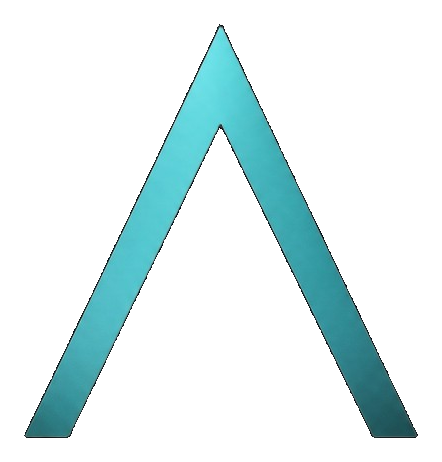
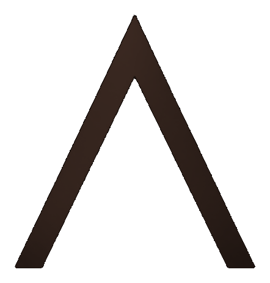

Flow · Charte graphique

Sites web · Applications métier · Plateformes
Version validée Nuit + jour · un logo
01 · Identité
Ingénieur qui livre des produits digitaux — fondateur de Flow. Pas « freelance sites vitrine ». Le switch dark / light change le mix, pas la marque. CTA toujours cyan. Terre jamais un bouton.
On est
Précis, concret, preuve
Nuit cyan et jour chaud
Un picto, un mot
Manrope + Inter
On n’est pas
Catalogue, superlatifs
Agence pastel / rainbow
Deux logos (F à barres)
Deux CTA cyan + orange
| Voix | Dit | Évite |
|---|---|---|
| Adams | Je / métier / preuves | Catalogue froid |
| Page Flow | Nous / offre / livraisons | Copier le post perso |
02 · Logo
Copie PNG, pas un SVG redessiné. Les variantes ne changent que la couleur des pixels. Ce n’est pas un A, ni un F.

Cyan · nuitOmbre · papierInk · fond cyan
| Fond | Picto |
|---|---|
| Ink #131313 | Cyan |
| Calcaire #F3EBE1 | Ombre — même forme |
| Blanc #FFFCFA | Cyan ou ombre |
| Cyan #00F0FF | Ink |
03 · Couleurs
Nuit
Ink #131313
Fond
Cyan #00F0FF
Logo, CTA
Ice #7DF4FF
Lueur
Terre #C45E32
1 badge max
Jour
Blanc #FFFCFA
Page
Calcaire #F3EBE1
Bandes
Cyan #00A8B2
CTA, liens
Cyan #00F0FF
Logo seul
Terre #C45E32
Kickers
Jamais de texte #00F0FF sur beige. Jamais de fond beige la nuit. Terre n’est jamais un bouton.
04 · Typo & composants
Build digital.
Corps Inter. Kickers uppercase, tracking 0.2em. Nuit → cyan. Jour → terre.
Nuit
Flow
Make it flow.
Parler de mon projetJour
À propos
Du cadrage au run.
Parler de mon projetBoutons 8 px · cartes 16 px · pills 9999 px. Conteneur max 80 rem. Lueurs cyan : nuit seulement.
05 · Usages
| Canal | Règle |
|---|---|
| Site | Switch dark / light. Jour = blanc + bandes calcaire, pas 100 % beige. |
| HQ | Toujours nuit. |
| Offre = nuit. Humain = calcaire + photo + picto ombre. | |
| 3–5 lignes, 1 CTA, chevron officiel. Pas de F à barres. | |
| Print / PDF | Ce document : jour. Couverture nuit autorisée. |
Flow
Build digital. Make it flow.
marketing/CHARTE_FLOW.pdf · /hq/design-system
Archivé : or #FED639 · paper froid #F8FBFC